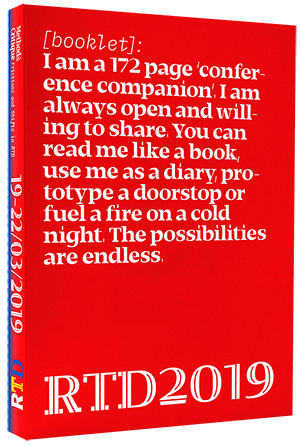

RTD2019 was held in Delft & Rotterdam from March 19th to 22nd, 2019 and revolved around the theme Method & Critique – Frictions and Shifts in RtD, through which we viewed and discussed the contemporary material, technological, socio-political and economic shifts in design research and practice that call for new ways of making. read more
VIEW THE RTD2019
‘CONFERENCE COMPANION’

This website is an archive of the content from RTD2019 accompanied by post-conference documentation.
View the conference Proceedings for access to all of the papers presented.
The Program details the daily schedule: Keynote Speakers, Panel Discussions, and Workshops. View the 172 page ‘Conference Companion’ online.
The Conference Documentation and Participatory Documentation offer multiple ways to reflect on RTD2019.
@RTD2019 ON INSTAGRAM


RTD2019 DAY 1

RTD2019 DAY 2

RTD2019 DAY 3

RTD2019 EXPERIENCE

RTD2019 EXHIBITION

RTD2019 WORKSHOPS

RTD2019 DOCUMENTATION